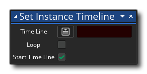

描述
This action assigns a timeline from the Resource Tree to the instance. You give the timeline to assign , and then you can choose to have the timeline loop when it reaches the last moment (the next frame after the last moment is run will loop back to the first moment of the timeline again) as well as whether to start the timeline immediately or not. If you do not start the timeline immediately you can use the action Set Timeline State to start it later in another event or script.
动作语法：

参数：
参数 描述 时间轴 需要赋给一个实例的时间轴资源。 循环 Flag to have the timeline loop after the last moment (default is flagged) 开始时间轴 Flag to have the timeline start immediately or not (default is flagged)
例如：

The above action block code will assign a timeline to the instance calling the actions as well as set the initial moment to 10 and then the timeline speed to 2.